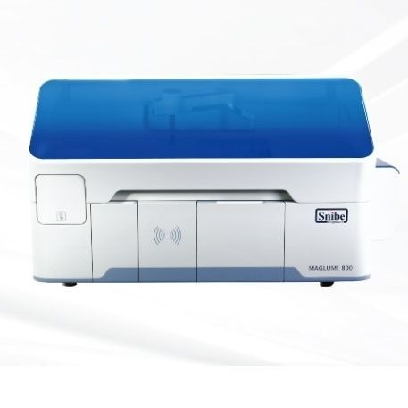

🇭🇺 EU vs 🇨🇳 Китай • 120 vs 180 т/ч • Открытая vs Закрытая
KLEEYA vs Snibe Maglumi 800
Snibe выигрывает в паспортной скорости, KLEEYA — в открытости, емкости проб и европейской экономике. Разбираем, где 180 т/ч не спасает.

KLEEYA
120 т/ч • Открытая • 72 пробы • 16 реагентов
VS

Snibe Maglumi 800
180 т/ч • Закрытая • 40 проб • 9 реагентов
| Параметр | KLEEYA | Maglumi 800 | Вывод |
|---|---|---|---|
| Пропускная спос. | 120 т/ч | 180 т/ч | Snibe +50% |
| 1-й результат | 25–30 мин | 17 мин | Snibe на 8–13 мин быстрее |
| Пробы на борту | 72 | 40 (16 у 600) | KLEEYA +80% |
| Реагенты на борту | 16 охлажд., continuous | 9 (15 у 2000) • 4 у 600 | KLEEYA +78% vs 800 |
| Кюветы | 500 | до 240 | KLEEYA 2× |
| Система | Открытая (до 170 CE) | Закрытая, ABEI-метка, интегрир. наборы с калибраторами | KLEEYA — выбор |
| Портфель | До 170 + уникальные (MxA, Alzheimer) | ~150, но только Snibe | Сопоставимо по кол-ву, но у KLEEYA уникальные |
| Метка / Стабильность | Акридиний, Dynamic Cap, до 56 дн | ABEI, стабильна в кислоте/щелочи, 4 недели калібр. | KLEEYA стабильнее на борту |
| RFID / LIS / STAT | Да / Двунаправл. / Да в любую поз. | Да / Да / Да | Паритет |
| Формат | Напольный 277 кг | Настольный | Snibe компактнее |
Почему KLEEYA выгоднее несмотря на 120 vs 180
- 16 реагентов vs 9 — держите больше панели без переставок; 72 пробы vs 40 — меньше простоев в пик
- Открытая: миксуете BioVendor/Mikrogen, снижая цену теста и добавляя высокомаржинальные уникальные
- 500 кювет vs 240 — реальный walk-away на ночь
- EU-сервис и CE IVD — тендеры, аккредитация, отсутствие валютной привязки к одному вендору
Слабые стороны KLEEYA тут
- Уступает в пиковой скорости: если нужно 4000+ тестов/сутки в одной точке — Snibe быстрее
- Напольный — требует выделенного места
Сильные стороны Snibe 800
- 180 т/ч — топ в классе настольных
- 17 мин до результата, 24 ч готовность
- Интегрир. наборы «все в одном» + калибраторы внутри
- Компактный настольный → ставится на стол
Слабые стороны
- Закрытость: только Snibe-наборы, нет уникальных EU-панелей
- Всего 9 реагентов — узкое окно одновременных тестов
- 40 проб — в пик придется чаще догружать
Вердикт
До 2000 тестов/сутки и нужна гибкость/маржа — берите KLEEYA. Если ваш сценарий — моно-поток 1–2 тестов на огромной скорости (скрининг) и дефицит пола — Snibe 800 как настольный спринтер. Для многопрофильной лаборатории KLEEYA дешевле владеет и больше зарабатывает на уникальных панелях.